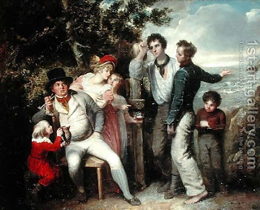

Bava Batra 133 - Is It Appropriate to Disinherit One's Children?

If one writes over his estate to others and leaves his children without a legacy, what he has done is done, that is, his gift is valid, but the spirit of the Sages is not pleased with him. By disinheriting his children, he usurps the order of succession ordained by the Torah.
Rabban Shimon ben Gamliel says: "If his children were not conducting themselves properly, he is remembered for good." Does Rabban Shimon ben Gamliel explain the ruling or argue against it?
The sons of one man did not conduct themselves property, and he left all his possessions to Yonathan ben Uziel, who in turn sold a third, donated another third to the Temple, and returned the rest to the sons of the donor. Shammai came after him with his stick, but Yonathan proved to Shammai that he did right.
Art: Francis Wheatley - A Family Group